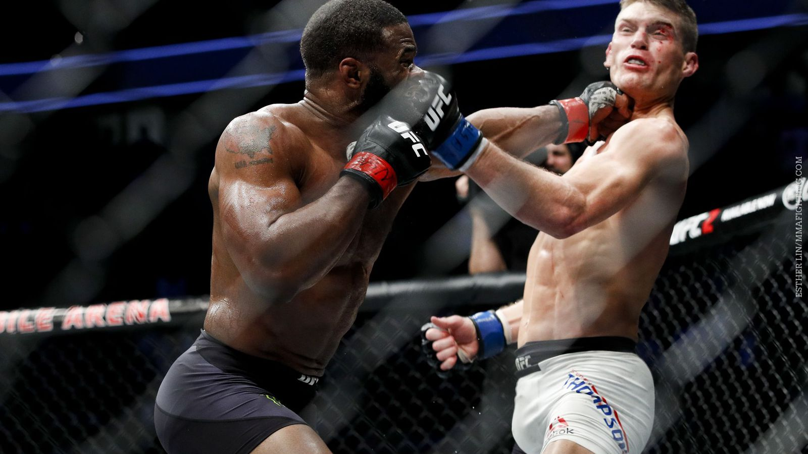
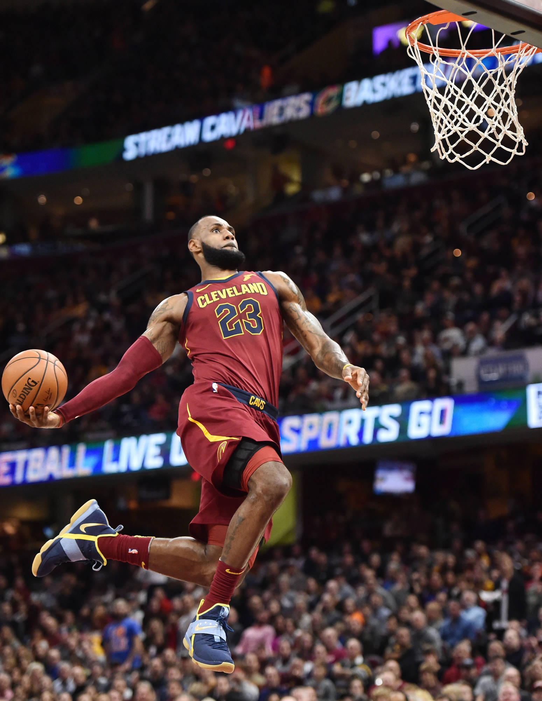
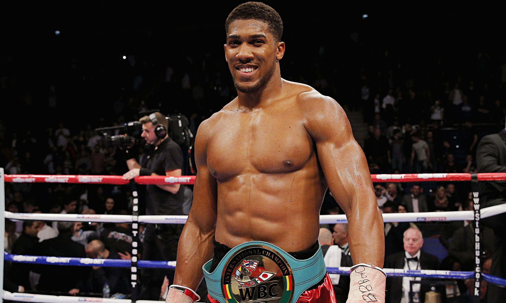
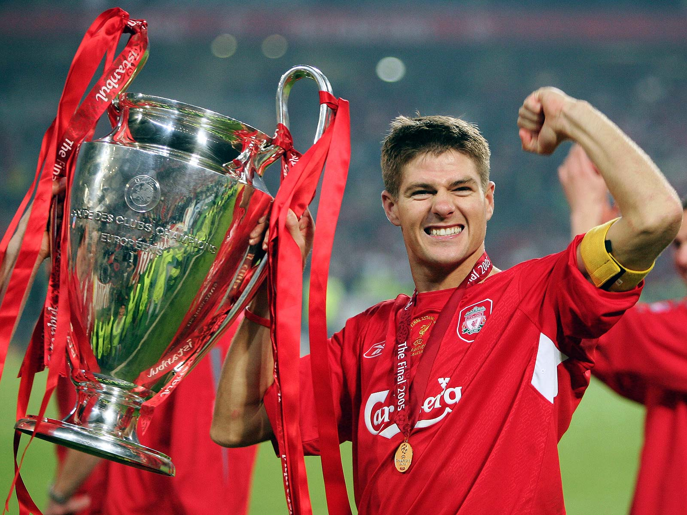

MMA is on of my favourite sports as it is the most exciting and entertaining sports to watch.
My love for MMA began in 2012 when Conor Mcgregor won the lightweight Cage Warriors title, from then on ive been obsessed with the sport.
Basketball is one of the most high paced and intense sports.
I became insterested in basketball through my friends who i watched the NBA Finals with in 2014 and ever since have been a supporter of the OKC.
My Father has been a massive supporter of boxing most of his life so ive been surrounded by it my whole life.
I travelled to london a few months ago to go to Anthony Joshua vs Povetkin.
Soccer is one of my favourite sports as i have been an avid Liverpool supporter from young.
I have also played with my local team from a young age and county in more recent years.
